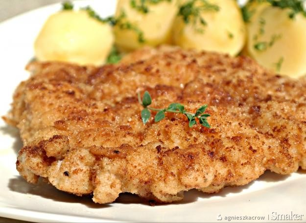

SCHABOWY

PRZYGOTOWANIE
SKŁADNIKI
-
600 g schabu środkowego
-
500 ml mleka
-
2 ząbki czosnku
-
1 cebula
-
3 liście laurowe
-
3 ziarna ziela angielskiego
-
1,5 łyżeczki soli
-
0,5 łyżeczki pieprzu czarnego
-
1 szklanka mąki pszennej
-
1 szklanka bułki tartej
-
olej roślinny lub smalec do smażenia
KROKI
-
Mięso podziel na cztery równe kotlety. Rozklep tłuczkiem do mięsa przez folię spożywczą. Grubość zależy o indywidualnych preferencji, osobiście nie rozbijam kotletów zbyt cienko, lubię gdy mają około 0,5 cm.
-
Tak przygotowane mięso przełóż do miski z mlekiem, dodaj obrany rozgnieciony czosnek, cebule pokrojoną w plastry, liść laurowy, ziele angielskie oraz sól i pieprz.
-
Odstaw do lodówki na 3-4 godziny, najlepiej na całą noc. Po tym czasie kotlety osusz ręcznikiem papierowym.
-
Następnie panieruj klasycznie: mąka, rozmącone jajo i bułka tarta.
-
Smaż na oleju lub smalcu na średnim ogniu po 3-4 minuty z każdej. Przed podaniem osącz z nadmiaru tłuszczu na ręczniku papierowym. Podawaj z ulubionymi dodatkami, u mnie ziemniaki z koperkiem i mizerią.